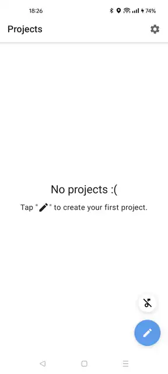

Muse - Text to Speech
قراءة وكتابة
Transform your written words into professional-quality speech with our intuitive text-to-speech converter. Powered by 11labs' advanced TTS technology, this app offers: • High-quality voice synthesis with natural-sounding results • Multiple voice options including American and British accents • Smart
✓ ترخيص مفتوح (GPL-3.0-only) · آخر تحديث: 2026-06-24
0.2.1الإصدار
5.5 MBالحجم
GPL-3.0-onlyالرخصة
Open in Kanzتحميل APK (5.5 MB)
Download APK
SHA-256: a68e5e61934ab1ee9b3fc926c2d148337de695227d10421ca8637575c169ff65

امسح الكود لفتح صفحة التطبيق
Scan to open this app page
لو كنز مش متثبت عندك: نزّل متجر كنز.
Not installed? Get the Kanz store.